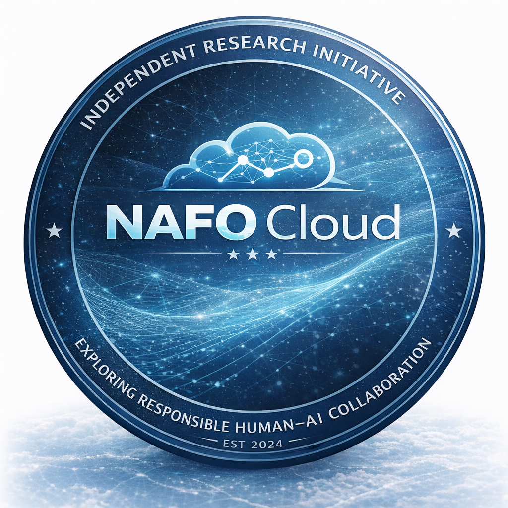

NAFO Cloud
Exploring Responsible Human–AI Collaboration
NAFO Cloud is an independent research initiative exploring how artificial intelligence can collaborate safely and responsibly with human professionals. Our work focuses on the intersection of AI systems, psychology, and decision-making in complex environments.
Acknowledgement
We express gratitude to the NAFO community whose resilience, humor, and civic creativity helped protect morale in difficult times. Some signals begin as jokes and grow into serious work.
Ukrainian proverb
“Терпіння і праця все перетруть.”
Patience and work overcome everything.
This page marks the beginning of a public archive of NAFO Cloud’s ongoing research and collaborations.